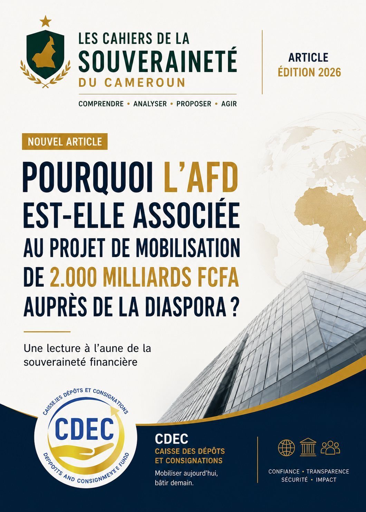

Why is the AFD involved in the plan to raise 2,000 billion CFA francs from the diaspora?
A reading through the lens of financial sovereignty.

Sovereignty is not decreed; it is built within a constrained environment.
The announcement of the plan to raise 2,000 billion CFA francs from the Cameroonian diaspora immediately raised many questions. Among them, one keeps coming back insistently: why is a project meant to mobilise Cameroonians' savings structured with the Agence Française de Développement (AFD)?
For some, this presence would be proof that Cameroon does not truly control its own economic destiny. For others, it would simply be the logical consequence of its membership in the franc zone. The reality is more complex.
To understand this cooperation, one must move beyond ideological reflexes and analyse the objective constraints facing any State wishing to raise international capital in the current monetary environment.
An operation of this scale goes beyond the national framework alone
Raising 2,000 billion CFA francs is not only about inviting Cameroonians abroad to invest. Such an operation involves building a financial mechanism that meets international requirements in terms of:
- governance;
- banking compliance;
- capital flows;
- anti-money-laundering;
- guarantees offered to investors;
- risk management;
- repayment of subscriptions;
- financial transparency.
In other words, it is no longer merely a Cameroonian project. It becomes an international financial operation. And in that world, institutional credibility matters as much as political will.
The institutional reality of the CFA zone
Cameroon belongs to the Central African Economic and Monetary Community (CEMAC) and uses the CFA franc. Whether one sees this situation as an advantage or a constraint, one fact remains: the major financial mechanisms deployed in this space operate within an institutional architecture built over several decades.
This architecture includes in particular:
- the BEAC;
- regional prudential authorities;
- commercial banks;
- development banks;
- international technical partners;
- institutions with long experience of the CFA zone.
In this environment, it is difficult to structure an international operation worth several billion euros without mobilising actors that already enjoy strong credibility with the markets.
Why the AFD adds value
Contrary to some preconceptions, the AFD's presence does not necessarily mean that France finances or directs the operation. Its role can be quite different. A development bank like the AFD generally brings:
- expertise in financial engineering;
- international governance standards;
- legal structuring capacity;
- experience with complex financial issuances;
- additional credibility with international partners.
In financial markets, trust is an asset. Institutional expertise is another. The AFD brings precisely the structuring capacity that States often seek when they set up large-scale operations.
Even great powers work with institutional realities
Some sometimes present this cooperation as proof of dependence. Yet the great powers themselves know how to adapt their strategies to the environments in which they invest. China offers an interesting example.
When it strongly expanded its investments in Africa, Beijing did not systematically seek to bypass the institutions already in place. On the contrary, France and China concluded agreements to develop joint financing on certain international projects, notably in Africa.
This choice did not reflect a loss of Chinese sovereignty. It followed a logic of pragmatism. When a financial environment already has its own networks, rules and recognised institutions, using them can speed up project implementation and reduce the risk perceived by investors.
Cooperating is not giving up one's sovereignty
A common mistake is to set sovereignty against cooperation. Yet, in international relations, sovereign States cooperate constantly. They sign military agreements. They develop industrial partnerships. They co-finance infrastructure. They create joint investment funds.
Sovereignty is therefore not about working alone. It is about retaining control of strategic decisions. In other words, the real question is not: "Why is the AFD taking part?" The real question is rather:
- Who decides how the funds are used?
- Who sets the investment criteria?
- Who controls the resources collected?
- Who steers the mechanism?
- Do Cameroon's interests remain the priority?
These are the questions the public authorities will have to answer precisely.
The real lesson: gradually building financial autonomy
Beyond the immediate debate, this operation reveals a much deeper reality. If Cameroon today feels the need to rely on external expertise to structure an international fundraising, it is also because African financial instruments are still in a consolidation phase.
This situation is a reminder of the importance of gradually strengthening:
- national banks;
- the BEAC's capacities;
- regional financial markets such as the BVMAC;
- national financial-engineering agencies;
- African guarantee mechanisms;
- continental payment systems such as PAPSS.
The goal is not to abruptly break off all international cooperation. The goal is that, tomorrow, African institutions will themselves have all the expertise needed to design, guarantee and steer very large-scale financial operations.
Sovereignty is a process, not a slogan
The debate around the AFD's participation must therefore not be reduced to a caricatured opposition between "dependence" and "independence." True economic sovereignty is measured by a State's ability to gradually strengthen its own institutions, develop its expertise and become, over time, less dependent on external skills.
From this perspective, international cooperation can be a tool of transition — provided it enables a genuine transfer of skills, strengthens national capacities and remains at the service of the priorities defined by Cameroon.
For sovereignty is not about refusing all cooperation. It is about ensuring that each cooperation brings the country a little closer to the day when it can, by itself, design and lead the great ambitions of its development.